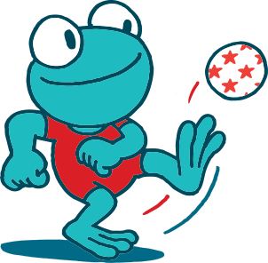

16sep2026
Multimove — lessenreeks 1
Woensdagen 16/09 – 2/12, 17u00 – 17u45 · Turnzaal Wigo, Wildert
Tien lessen Multimove voor kinderen van 3 tot 8 jaar. De eerste les is vrijblijvend; daarna € 50 lidgeld voor de reeks. Reeks 2 start op woensdag 13 januari 2027.
